YouTube Trending Videos
Table of contents
*분석 대상 데이터셋: YouTube Trending Videos (Korea)
- 데이터셋 출처
- 2017-11-14 ~ 2018-06-14 사이에 trending한 동영상 34,567개의 데이터
- 일별 trending 동영상이 최소 52개에서 최대 192개까지 저장되어 있으며, 이틀 이상 trending한 동영상의 경우 여러 번 중복해서 포함되어 있음
- Columns (16개): ‘video_id’, ‘trending_date’, ‘title’, ‘channel_title’, ‘category_id’, ‘publish_time’, ‘tags’, ‘views’, ‘likes’, ‘dislikes’, ‘comment_count’, ‘thumbnail_link’, ‘comments_disabled’, ‘ratings_disabled’, ‘video_error_or_removed’, ‘description’
데이터 파악 및 전처리
# 필요한 라이브러리 import
import pandas as pd
import numpy as np
from matplotlib import pyplot as plt
import seaborn as sns
결측치, 중복값 파악
videos_df = pd.read_csv('data/KRvideos.csv')
videos_df.head(3)
| video_id | trending_date | title | channel_title | category_id | publish_time | tags | views | likes | dislikes | comment_count | thumbnail_link | comments_disabled | ratings_disabled | video_error_or_removed | description | |
|---|---|---|---|---|---|---|---|---|---|---|---|---|---|---|---|---|
| 0 | RxGQe4EeEpA | 17.14.11 | 좋아 by 민서_윤종신_좋니 답가 | 라푸마코리아 | 22 | 2017-11-13T07:07:36.000Z | 라푸마|“윤종신”|“좋니”|“좋아”|“샬레”|“민서” | 156130 | 1422 | 40 | 272 | https://i.ytimg.com/vi/RxGQe4EeEpA/default.jpg | False | False | False | 윤종신 ‘좋니’의 답가 ‘좋아’ 최초 공개!\n그 여자의 이야기를 지금 만나보세요… (생략) |
| 1 | hH7wVE8OlQ0 | 17.14.11 | JSA 귀순 북한군 총격 부상 | Edward | 25 | 2017-11-13T10:59:16.000Z | JSA|“귀순”|“북한군”|“총격”|“부상”|“JSA 귀순 북한군 총격 부상” | 76533 | 211 | 28 | 113 | https://i.ytimg.com/vi/hH7wVE8OlQ0/default.jpg | False | False | False | [채널A단독]北 병사 현재 ‘의식불명’… 혈압 떨어지는 중 \n[채널A단독]우리측 초소 50m 앞서 의식 잃고 쓰러져… (생략) |
| 2 | 9V8bnWUmE9U | 17.14.11 | 나몰라패밀리 운동화 영상 2탄 (빼빼로데이버젼) | 나몰라패밀리 핫쇼 | 22 | 2017-11-11T07:16:08.000Z | 아디다스|“빼빼로”|“핫쇼”|“나몰라패밀리”|“대학로”|“공연” | 421409 | 5112 | 166 | 459 | https://i.ytimg.com/vi/9V8bnWUmE9U/default.jpg | False | False | False | 퍼가실때 꼭 출처 부탁드려요 |
-
dataframe 정보 확인: data type, null값 여부
videos_df.info()<class 'pandas.core.frame.DataFrame'> RangeIndex: 34567 entries, 0 to 34566 Data columns (total 16 columns): # Column Non-Null Count Dtype --- ------ -------------- ----- 0 video_id 34567 non-null object 1 trending_date 34567 non-null object 2 title 34567 non-null object 3 channel_title 34567 non-null object 4 category_id 34567 non-null int64 5 publish_time 34567 non-null object 6 tags 34567 non-null object 7 views 34567 non-null int64 8 likes 34567 non-null int64 9 dislikes 34567 non-null int64 10 comment_count 34567 non-null int64 11 thumbnail_link 34567 non-null object 12 comments_disabled 34567 non-null bool 13 ratings_disabled 34567 non-null bool 14 video_error_or_removed 34567 non-null bool 15 description 31404 non-null object dtypes: bool(3), int64(5), object(8) memory usage: 3.5+ MB- description 칼럼에만 null값이 조금 있고 나머지는 없음
- description 칼럼의 null값은 분석에 큰 영향을 주지 않는다고 생각되어 별다른 처리를 하지는 않음.
-
중복값 확인
# 중복값이 포함되어 있나 확인 (모든 열의 데이터가 같은 경우) videos_df.duplicated().sum()2316→ 모든 열의 값이 다 중복되는 데이터는 하나의 row만 남기고 삭제
print('중복 제거 이전: ', len(videos_df)) videos_df.drop_duplicates(inplace=True, ignore_index=True) print('중복 제거 이후: ', len(videos_df))
category_id에 category명 연결
-
KR_category_id.json 파일 불러오기
import json with open("data/KR_category_id.json", "r", encoding="utf-8") as f: json_data = json.load(f) json_data{'kind': 'youtube#videoCategoryListResponse', 'etag': '"XI7nbFXulYBIpL0ayR_gDh3eu1k/1v2mrzYSYG6onNLt2qTj13hkQZk"', 'items': [{'kind': 'youtube#videoCategory', 'etag': '"XI7nbFXulYBIpL0ayR_gDh3eu1k/Xy1mB4_yLrHy_BmKmPBggty2mZQ"', 'id': '1', 'snippet': {'channelId': 'UCBR8-60-B28hp2BmDPdntcQ', 'title': 'Film & Animation', 'assignable': True}}, {'kind': 'youtube#videoCategory', 'etag': '"XI7nbFXulYBIpL0ayR_gDh3eu1k/UZ1oLIIz2dxIhO45ZTFR3a3NyTA"', 'id': '2', 'snippet': {'channelId': 'UCBR8-60-B28hp2BmDPdntcQ', 'title': 'Autos & Vehicles', 'assignable': True}}, (생략)} -
category_id_df에 category_id와 category_name 칼럼 정리
temp_list = [] for item in json_data['items']: temp_list.append([int(item['id']), item['snippet']['title']]) category_id_df = pd.DataFrame(temp_list, columns=['category_id', 'category_name']) print(len(category_id_df)) category_id_df.head()category_id category_name 0 1 Film & Animation 1 2 Autos & Vehicles 2 10 Music 3 15 Pets & Animals 4 17 Sports -
videos_df에 category_id_df 결합
videos_df = pd.merge(videos_df, category_id_df, on='category_id', how='left') videos_df[['title', 'category_id', 'category_name']].head()title category_id category_name 0 좋아 by 민서_윤종신_좋니 답가 22 People & Blogs 1 JSA 귀순 북한군 총격 부상 25 News & Politics 2 나몰라패밀리 운동화 영상 2탄 (빼빼로데이버젼) 22 People & Blogs 3 이명박 출국 현장, 놓치면 안되는 장면 25 News & Politics 4 김장겸은 물러갔다 MBC 노조 환호와 눈물 25 News & Politics → null값이 몇 개 생겼나 확인
videos_df['category_name'].isnull().sum()269→ null값의 원인 파악: json 파일에 29번이 없어서 차이가 생긴 것
set(videos_df['category_id']) - set(category_id_df['category_id']){29}→ category_name 칼럼의 null값에 ‘N/A’라는 string값을 넣어줌
videos_df['category_name'].fillna('N/A', inplace=True) videos_df['category_name'].isnull().sum() # null값이 잘 대체되었나 확인0
datetime 타입 변경
- trending_date와 publish_time을 datetime 타입으로 바꿔줌
# datetime 타입으로 바꿔줌
videos_df['trending_date'] = pd.to_datetime(videos_df['trending_date'], format='%y.%d.%m')
videos_df['publish_time'] = pd.to_datetime(videos_df['publish_time'])
# type이 잘 바뀌었는지 확인
videos_df[['trending_date', 'publish_time']].dtypes
trending_date datetime64[ns]
publish_time datetime64[ns, UTC]
dtype: object
trending 동영상 특징 파악
동영상별 trending 횟수
trending_count = videos_df.groupby('title')[['trending_date']].count().reset_index()
trending_count.sort_values(by='trending_date', ascending=False, inplace=True)
trending_count.head()
| title | trending_date | |
|---|---|---|
| 11072 | 브베 실시간 스트리밍 | 19 |
| 13718 | 이재용 여자관계와 연예인, 배우 이나영, 윤은혜가, 조수빈 | 9 |
| 2074 | Bruno Mars,Charlie Puth,Ed Sheeran Best Christmas Songs,Greatest Hits Pop Playlist Christmas 2018 | 9 |
| 2751 | Marvel Studios’ Avengers: Infinity War Official Trailer | 8 |
| 8552 | 나얼 (Naul) - 기억의 빈자리 (Emptiness in Memory) MV | 8 |
*통계량 확인
print(trending_count.describe())
trending_date
count 16353.000000
mean 1.972176
std 1.068082
min 1.000000
25% 1.000000
50% 2.000000
75% 3.000000
max 19.000000
*시각화해서 확인
fig, (ax1, ax2) = plt.subplots(ncols=2, figsize=(12, 4))
sns.kdeplot(trending_count['trending_date'], bw_method=0.5, color='skyblue', ax=ax1)
sns.countplot(data=trending_count, x="trending_date", color='skyblue', ax=ax2)
plt.close(2)
plt.close(3)
plt.tight_layout()
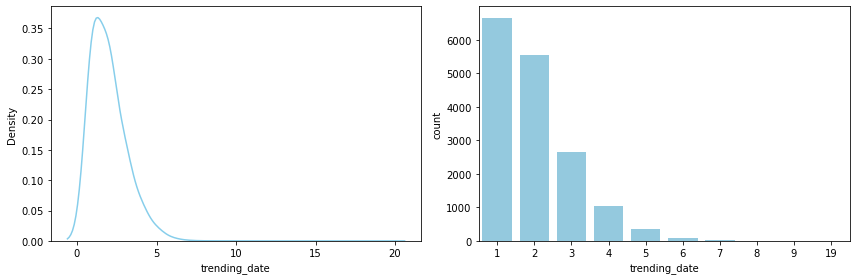
- 1-2번 trending한 동영상이 가장 많으며, 전체의 75% 이상이 3번 이하 trending
월별 카테고리별 trending 동영상 추이
-
month 단위로 정리
## 연-월로만 trending_date를 다시 정리 videos_df['trending_month'] = videos_df['trending_date'].dt.strftime('%Y%m') videos_df[['trending_date', 'trending_month']].head()trending_date trending_month 0 2017-11-14 201711 1 2017-11-14 201711 2 2017-11-14 201711 3 2017-11-14 201711 4 2017-11-14 201711 -
월별 카테고리별 trending video 수 집계
# nunique()로, 중복을 제거해 집계 (같은 month에 같은 title의 영상이 2번 이상 trending한 경우, 1번으로 count) groupby_df1 = copied_df1.groupby(['trending_month', 'category_name'])[['title']].nunique().reset_index() groupby_df1.rename(columns={'title': 'count'}, inplace=True) groupby_df1.head()trending_month category_name count 0 201711 Autos & Vehicles 12 1 201711 Comedy 62 2 201711 Education 19 3 201711 Entertainment 354 4 201711 Film & Animation 111 -
시각화해서 월별 추이를 확인
plt.figure(figsize=(12, 5)) sns.lineplot(data=groupby_df1, x='trending_month', y='count', hue='category_name', palette='Set3') # legend를 box 밖으로 빼 줌 plt.legend(bbox_to_anchor=(1.01, 1), borderaxespad=0);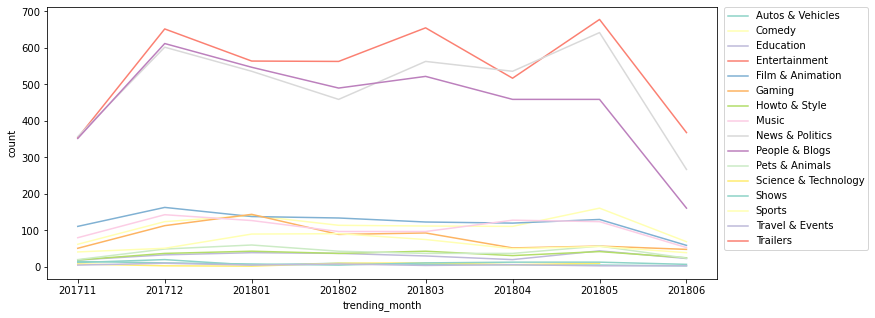
- 모든 월에 Entertainment, News & Politics, People & Blogs 카테고리가 가장 인기가 있음을 알 수 있다
- 2018.03월을 기점으로 News & Politics 카테고리가 People & Blogs 카테고리의 인기를 추월
- 2017-11-14 ~ 2018-06-14 사이의 dataset이기 때문에 201711과 201806은 대부분의 카테고리에서 trending 동영상 수가 낮게 나옴
등록 요일별 / 시간대별 차이
# 등록된 '요일'을 별도 칼럼으로 저장 (0: 월 ~ 6: 일)
videos_df['publish_weekday'] = videos_df['publish_time'].dt.weekday
# 등록된 '시간대'를 별도 칼럼으로 저장 (0 ~ 24)
videos_df['publish_hour'] = videos_df['publish_time'].dt.hour
videos_df[['publish_time', 'publish_weekday', 'publish_hour']].head()
| publish_time | publish_weekday | publish_hour | |
|---|---|---|---|
| 0 | 2017-11-13 07:07:36+00:00 | 0 | 7 |
| 1 | 2017-11-13 10:59:16+00:00 | 0 | 10 |
| 2 | 2017-11-11 07:16:08+00:00 | 5 | 7 |
| 3 | 2017-11-12 11:19:52+00:00 | 6 | 11 |
| 4 | 2017-11-13 11:08:59+00:00 | 0 | 11 |
- 등록 요일별 비교
sns.countplot(data=videos_df, x='publish_weekday', color='skyblue');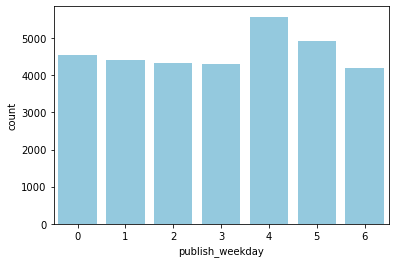
- 금요일에 publish된 동영상이 비교적 trending한 수가 많은 편
- 한 동영상이 여러 번 trending한 경우도 포함해서 계산
-
등록 시간대별 비교
groupby_df2 = videos_df.groupby(['publish_hour'])[['video_id']].count().reset_index() plt.figure(figsize=(10, 6)) sns.lineplot(data=groupby_df2, x='publish_hour', y='video_id', color='pink');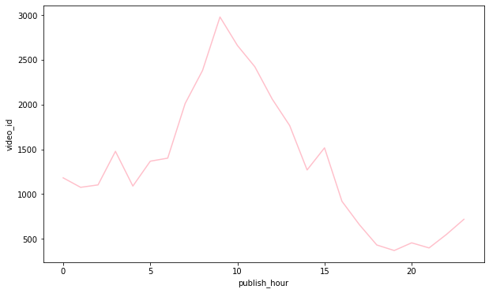
- 오전 9시 전후에 publish된 동영상이 trending한 수가 많은 편
+) 시간대별, 요일별 차이 비교
groupby_df3 = videos_df.groupby(['publish_hour', 'publish_weekday'])[['video_id']].count().reset_index() plt.figure(figsize=(10, 6)) sns.lineplot(data=groupby_df3, x='publish_hour', y='video_id', hue='publish_weekday');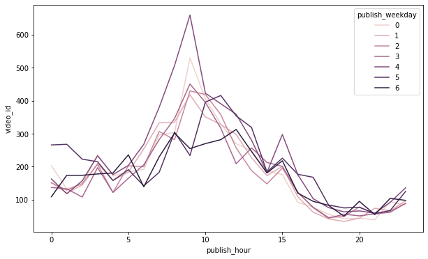
- 특히 금요일 오전 9시경에 publish된 동영상이 비교적 trending한 수가 많은 편
trending하기까지의 기간 비교
- 동영상들이 대체로 publish 후 trending하기까지 어느 정도의 기간이 걸렸는지 확인
데이터 가공
# publish ~ trending 사이의 기간을 계산: integer로 저장 (단위: days)
## dt.date로 두 칼럼의 type을 통일해줘야 빼서 기간을 계산하는 게 가능
videos_df['publish_to_trending'] = (videos_df['trending_date'].dt.date - videos_df['publish_time'].dt.date).dt.days
videos_df[['trending_date', 'publish_time', 'publish_to_trending']].head()
| trending_date | publish_time | publish_to_trending | |
|---|---|---|---|
| 0 | 2017-11-14 | 2017-11-13 07:07:36+00:00 | 1 |
| 1 | 2017-11-14 | 2017-11-13 10:59:16+00:00 | 1 |
| 2 | 2017-11-14 | 2017-11-11 07:16:08+00:00 | 3 |
| 3 | 2017-11-14 | 2017-11-12 11:19:52+00:00 | 2 |
| 4 | 2017-11-14 | 2017-11-13 11:08:59+00:00 | 1 |
*같은 video_id & title, 다른 trending_date를 가진 데이터 삭제
- ※ ‘영상 등록 후 trending되기까지의 기간이 보통 어느 정도 걸리는지’를 확인하고자 하는 것이기에, 하나의 동영상이 처음으로 trending한 시점의 데이터만 가지고 분포를 확인하기로.
→ 처음으로 trending한 시점의 데이터만 남기고 중복값 삭제 (= 중복된 행들 중 가장 위에 있는 행만 남기고 다 삭제)
# trending_date 기준으로 오름차순 정렬
videos_df_sorted = videos_df.sort_values(by='trending_date', ignore_index=True)
# 영상별로 가장 먼저 trending한 날의 데이터만 남긴 데이터셋을 unique_videos_df에 새로 저장
unique_videos_df = videos_df_sorted.drop_duplicates(subset=['video_id', 'title'], ignore_index=True)
print('videos_df: ', len(videos_df))
print('unique_videos_df: ', len(unique_videos_df))
videos_df: 32251
unique_videos_df: 16393
데이터 분포 확인
plt.figure(figsize=(20,8))
sns.countplot(data=unique_videos_df, x="publish_to_trending", color='skyblue');
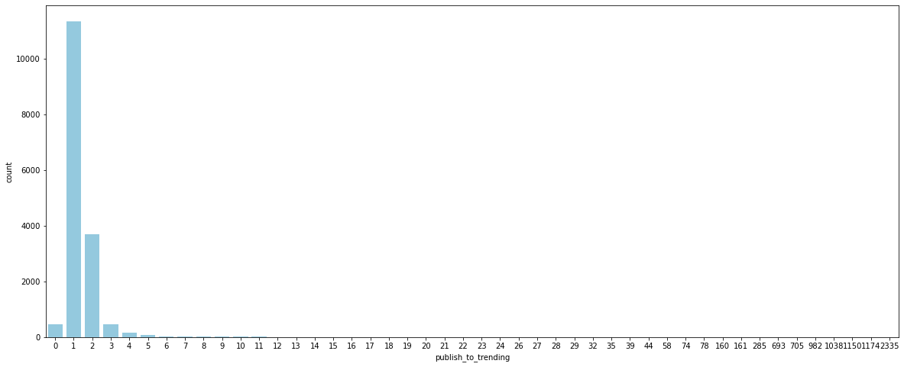
- 대체로 영상 등록 후 trending되기까지의 기간이 3일 이내이며, 특히 등록 후 하루 만에 trending하는 경우가 가장 많음
sns.catplot(data=unique_videos_df, x='publish_to_trending', height=5, aspect=3, color='skyblue');
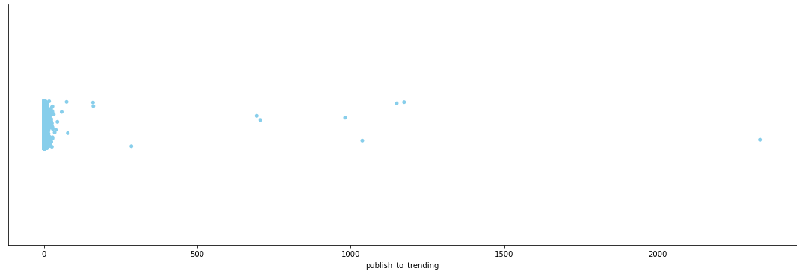
- 약 20일 정도를 넘어서면, 그 이후에는 상당히 outlier 간의 간격이 크게 분포
카테고리별 분포 확인
- 어느 카테고리에 outlier가 많이 포진되어 있는지, publish 후 trending하기까지의 평균 기간이 어떻게 다른지 확인
# 어느 카테고리에 outlier가 많이 포진되어 있는지 확인
sns.catplot(data=unique_videos_df, x='category_name', y='publish_to_trending', palette='Blues_d', height=5, aspect=3)
plt.xticks(rotation=45);
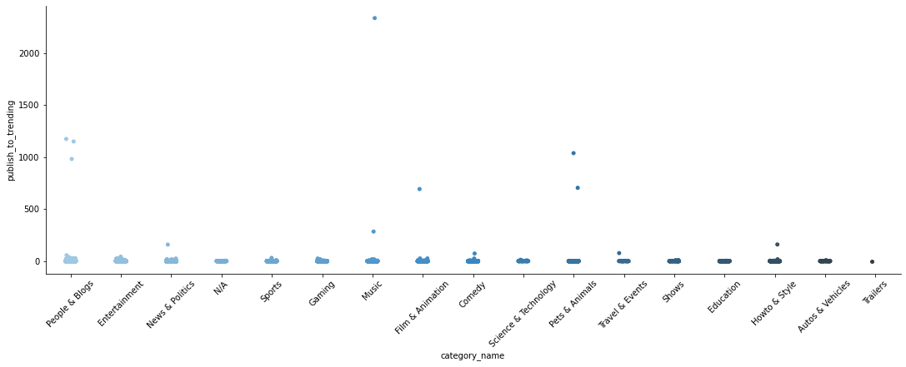
- 특히 Music, People & Blogs, Pets & Animals, Film & Animation 카테고리에서 정상 범주를 크게 벗어나는 데이터가 발견됨
- 크게 유행을 타지 않고 인기를 끌 수 있는 카테고리이기 때문에 trending되기까지의 기간이 긴 경우가 발견되는 편이라고 생각됨
# 카테고리별 평균 publish~trending 기간 비교 (선은 95% 신뢰구간)
plt.figure(figsize=(20, 6))
sns.barplot(data=unique_videos_df, x='category_name', y='publish_to_trending', palette='Blues_d');
plt.xticks(rotation=45);
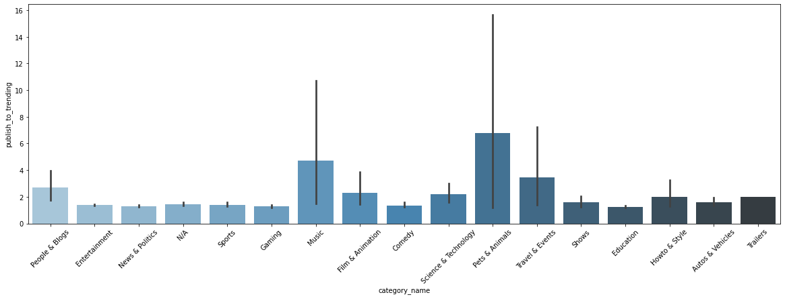
- Music, Pets & Animals 등은 편차가 큰 반면, Entertainment, News & Politics, Sports, Gaming 등 시의성이 중요할 수 있는 영상들은 대체로 빠르신 시일 내에 trending한 경우가 많음.
# Music 카테고리의 outlier top3 확인
videos_music_df = unique_videos_df[unique_videos_df['category_name'] == 'Music']
videos_music_df.sort_values(by='publish_to_trending', ascending=False)[['title', 'trending_date', 'publish_time', 'publish_to_trending']].head(3)
| title | trending_date | publish_time | publish_to_trending | |
|---|---|---|---|---|
| 7864 | 손성제 - Goodbye | 2018-02-19 00:00:00 | 2011-09-29 13:08:39+00:00 | 2335 |
| 1695 | Taylor swift - See You Again | 2017-12-02 00:00:00 | 2017-02-20 14:25:18+00:00 | 285 |
| 12731 | 갈수록 어려워지는 젓가락 행진곡을 이렇게 친다고???? | 2018-04-28 00:00:00 | 2018-04-09 16:36:09+00:00 | 19 |
- Music 카테고리는 특정 계기로 재발견되어 인기를 얻게 되는 음악 영상들이 존재해 유독 분포의 정상 범위를 크게 벗어나는 outlier가 발견되는 편이라고 생각됨
- 예를 들어, trending까지의 기간이 가장 길게 나타난 Music 카테고리의 ‘손성제-Goodbye’ 영상의 경우, 2018.02 ‘효리네 민박’ 방송을 통해 재발견되면서 trending 영상에 포함된 것으로 추정
views와 다른 변수 간의 관계
# 상관계수 확인 (heatmap으로 시각화해서 확인)
sns.heatmap(videos_df[['views', 'likes', 'dislikes', 'comment_count']].corr(), annot=True, cmap='Blues')
plt.yticks(rotation=0);
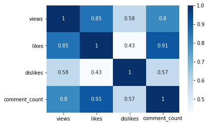
- likes와 comment_count, views가 강한 상관관계를 보이며, likes는 comment_count와 매우 강한 상관관계를 보인다
views와 likes
: views가 많은 영상일수록 likes도 많을까?
# ratings_disabled 기능이 켜져 있으면 likes / dislikes를 누르는 것이 불가능
print(videos_df[videos_df['ratings_disabled'] == True][['likes', 'dislikes']].describe())
likes dislikes
count 1308.00 1308.00
mean 0.00 0.00
std 0.00 0.00
min 0.00 0.00
25% 0.00 0.00
50% 0.00 0.00
75% 0.00 0.00
max 0.00 0.00
→ ratings_diabled 기능이 사용된 영상들을 제외하고 진행
# ratings_disabled 기능을 사용한 영상들을 제외한 나머지 데이터를 rated_videos_df에 저장
rated_videos_df = videos_df[~videos_df['ratings_disabled']]
rated_videos_df.reset_index(drop=True, inplace=True) # reset index
print('videos_df: ', len(videos_df))
print('rated_videos_df: ', len(rated_videos_df))
videos_df: 32251
rated_videos_df: 30943
-
상관계수 및 선형회귀선 확인
import scipy.stats as stats # 피어슨 상관계수 검정 corr = stats.pearsonr(rated_videos_df['views'], rated_videos_df['likes']) print('Corr_Coefficient : %.3f \np-value : %.3f' % (corr))Corr_Coefficient : 0.858 p-value : 0.000- 강한 상관관계를 보이는 것을 확인 (p-value < 0.01)
# view와 likes 간의 관계 확인: 선형회귀선 확인 sns.lmplot(data=rated_videos_df, x='views', y='likes', height=5, aspect=1.5); ## default: ci=95 (95% 신뢰구간)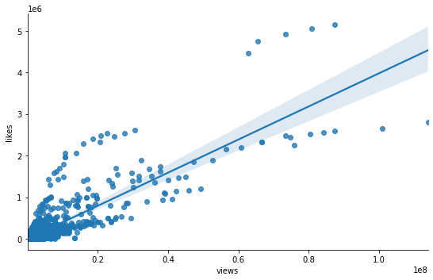
-
카테고리별 차이 확인
sns.lmplot(data=rated_videos_df, x='views', y='likes', hue='category_name', palette='Set3', height=5, aspect=1.5);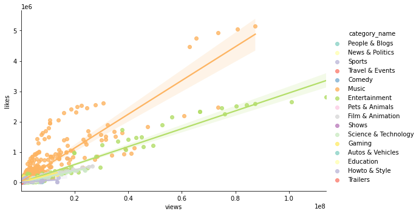
- 카테고리별로 나누면 보다 각각에 잘 맞는 선형회귀선을 그리는 것이 가능
## Music 카테고리 sns.heatmap(videos_df[videos_df['category_name'] == 'Music'][['views', 'likes', 'dislikes', 'comment_count']].corr(), annot=True, cmap='Blues') plt.yticks(rotation=0);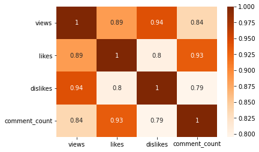
## Entertainment 카테고리 sns.heatmap(videos_df[videos_df['category_name'] == 'Entertainment'][['views', 'likes', 'dislikes', 'comment_count']].corr(), annot=True, cmap='Blues') plt.yticks(rotation=0);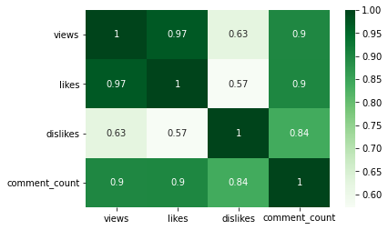
## Film & Animation 카테고리 sns.heatmap(videos_df[videos_df['category_name'] == 'Film & Animation'][['views', 'likes', 'dislikes', 'comment_count']].corr(), annot=True, cmap='Blues') plt.yticks(rotation=0);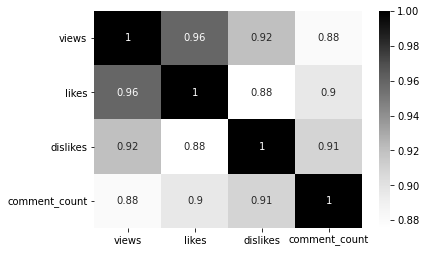
- 카테고리별로 나누어서 확인하면, views와 likes 간의 상관관계가 보다 강하게 확인된다
views와 dislikes
: views가 많은 영상일수록 dislikes도 많을까?
-
카테고리별로, views와 dislikes의 관계를 확인
sns.lmplot(data=rated_videos_df, x='views', y='dislikes', hue='category_name', palette='Set3', height=5, aspect=1.5);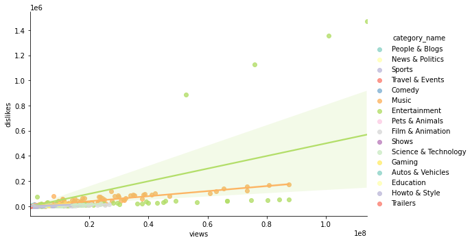
- ‘Entertainment’ 카테고리의 4개 점을 제외하면 대체로 상관관계가 있어 보임
-
dislike가 많은 영상이 어떤 것인지 확인
# dislikes 많은 영상부터 순서대로 정렬 videos_df.sort_values(by='dislikes', ascending=False)[['video_id', 'title', 'channel_title', 'trending_date', 'category_name']].head()video_id title channel_title trending_date category_name 4716 FlsCjmMhFmw YouTube Rewind: The Shape of 2017 #YouTubeRewind YouTube Spotlight 2017-12-11 Entertainment 4538 FlsCjmMhFmw YouTube Rewind: The Shape of 2017 #YouTubeRewind YouTube Spotlight 2017-12-10 Entertainment 4313 FlsCjmMhFmw YouTube Rewind: The Shape of 2017 #YouTubeRewind YouTube Spotlight 2017-12-09 Entertainment 4104 FlsCjmMhFmw YouTube Rewind: The Shape of 2017 #YouTubeRewind YouTube Spotlight 2017-12-08 Entertainment 29013 7C2z4GqqS5E BTS (방탄소년단) ‘FAKE LOVE’ Official MV ibighit 2018-05-24 Music - 가장 dislike가 많았던 영상 4개는 모두 같은 동영상.
-
dislike가 많은 Entertainment 카테고리의 영상 1개 (= 4개 row)를 제외하고 상관관계를 파악
# 피어슨 상관계수 검정 drop_index = rated_videos_df.sort_values(by='dislikes', ascending=False).head(4).index dl_outlier_removed_videos_df = rated_videos_df.drop(drop_index, axis='index') corr = stats.pearsonr(dl_outlier_removed_videos_df['views'], dl_outlier_removed_videos_df['dislikes']) print('Corr_Coefficient : %.3f \np-value : %.3f' % (corr))Corr_Coefficient : 0.836 p-value : 0.000- dislikes의 outlier 4개 점을 제외하고 나니 상관계수가 강해진 것을 확인할 수 있다
-
outlier를 제외한 관계를 시각화해서 파악
sns.lmplot(data=dl_outlier_removed_videos_df, x='views', y='dislikes', hue='category_name', palette='Set3', height=5, aspect=1.5);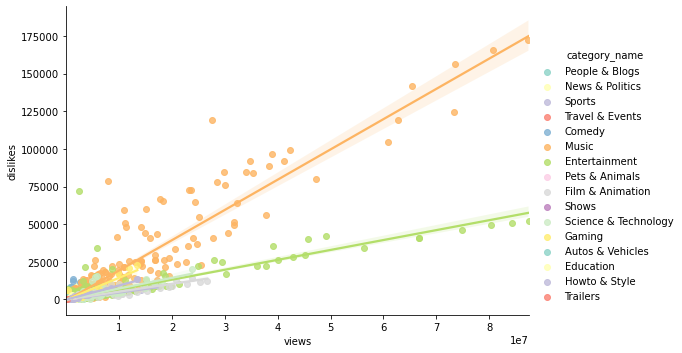
- outlier 4개 점을 제외하고 보면, 카테고리별로 현상을 잘 설명하는 선형회귀선을 그리는 것이 가능
기능 사용 유무에 따른 비교
- comments_disabled와 ratings_disabled 기능을 사용한 비율 확인 & 기능 사용 여부가 views에 미치는 영향을 확인
comments/ratings_disabled 기능 사용 비율
- ※ ‘trending 동영상 중 몇%가 각 기능을 사용했는지’를 파악하기 위해서는 같은 동영상 데이터가 중복되어 포함되면 안된다고 생각 → 같은 동영상인데 여러 번 trending해서 데이터가 여러 번 포함된 경우는 제외 (위에서 저장해두었던 unique_videos_df를 사용)
comments_disabled_percentage = len(unique_videos_df[unique_videos_df['comments_disabled']]) / len(unique_videos_df) * 100
ratings_disabled_percentage = len(unique_videos_df[unique_videos_df['ratings_disabled']]) / len(unique_videos_df) * 100
print(f'comments_disabled 비율: {comments_disabled_percentage :.2f}%')
print(f'ratings_disabled 비율: {ratings_disabled_percentage :.2f}%')
comments_disabled 비율: 1.53%
ratings_disabled 비율: 4.57%
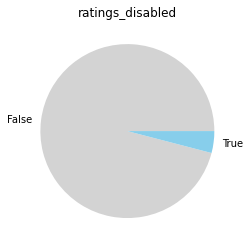
- trending한 영상 중 ratings_disabled나 comments_disabled 기능을 사용한 영상을 현저히 적긴 하지만, 전체 동영상 중 비율을 모르기 때문에 어떤 결론을 이끌어내는 것은 불가능…
comments/ratings_disabled 기능의 views에의 영향
- ※ 영상별로 data를 1개만 남기되, 가장 마지막으로 trending한 날의 데이터(=데이터셋 내 해당 영상의 최고 views 데이터)만 남긴다
- 특정 기능의 유무에 따라 views가 얼마나 달라지는지를 확인하기 위함이므로, 영상별 최고 views로 분포 파악
(ex. 가설 예시: ratings_disabled 기능을 사용하면 사용하지 않는 것보다 views가 낮게 형성된다)
-
기능 유무에 따른 views 분포 확인
# comments_disabled가 views에 어떤 영향을 미치는지 fig, (ax1, ax2) = plt.subplots(ncols=2, figsize=(10, 5)) sns.stripplot(data=unique_recentf_df, x='comments_disabled', y='views', palette='Blues', ax=ax1) sns.boxplot(data=unique_recentf_df, x='comments_disabled', y='views', palette='Blues', showfliers=False, ax=ax2) plt.close(2) plt.close(3) plt.tight_layout()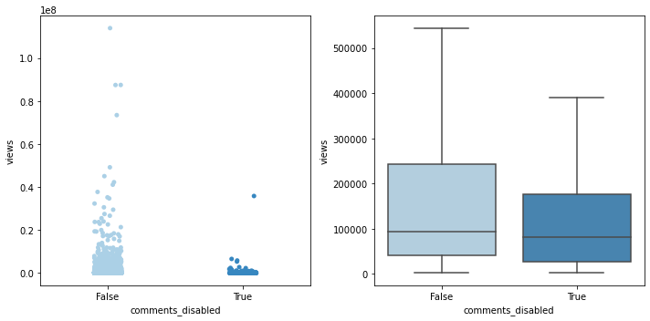
# ratings_disabled가 views에 어떤 영향을 미치는지 fig, (ax1, ax2) = plt.subplots(ncols=2, figsize=(10, 5)) sns.stripplot(data=unique_recentf_df, x='ratings_disabled', y='views', palette='Blues', ax=ax1) sns.boxplot(data=unique_recentf_df, x='ratings_disabled', y='views', palette='Blues', showfliers=False, ax=ax2) plt.close(2) plt.close(3) plt.tight_layout()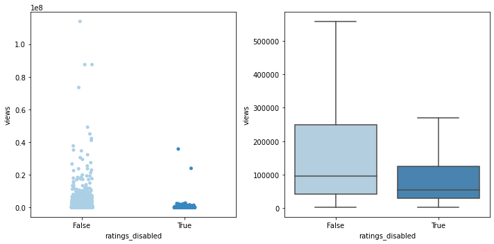
-
기능 유무에 따라 평균 views에 차이가 있는지 확인
- 평균 views 비교 후, t-test로 차이가 유의미하다고 봐야 할 지 확인
print('--평균 views 비교 -------') print('comments_disabled: {:.0f}'.format(unique_recentf_df['views'][unique_recentf_df['comments_disabled']].mean())) print('comments_abled: {:.0f}\n'.format(unique_recentf_df['views'][~unique_recentf_df['comments_disabled']].mean())) print('ratings_disabled: {:.0f}'.format(unique_recentf_df['views'][unique_recentf_df['ratings_disabled']].mean())) print('ratings_abled: {:.0f}'.format(unique_recentf_df['views'][~unique_recentf_df['ratings_disabled']].mean()))--평균 views 비교 ------- comments_disabled: 384423 comments_abled: 369001 ratings_disabled: 209573 ratings_abled: 3769421) comments_disabled 기능 유무에 따른 차이
comments_disabled = unique_recentf_df[unique_recentf_df['comments_disabled']] comments_abled = unique_recentf_df[~unique_recentf_df['comments_disabled']] # Levene의 등분산 검정 lev_result = stats.levene(comments_disabled['views'], comments_abled['views']) print('LeveneResult(F) : %.2f \np-value : %.3f' % (lev_result)) ## 대체로 p값이 0.05 이상이면 등분산 가정, 등분산인 독립표본 t-test로 진행LeveneResult(F) : 0.05 p-value : 0.819# 등분산인 독립표본 t-test 실행 t_result = stats.ttest_ind(comments_disabled['views'], comments_abled['views'], equal_var=True) print('t statistic : %.2f \np-value : %.3f' % (t_result))t statistic : 0.12 p-value : 0.902- p값 > 0.05이고, 위에서 실제 값으로 살펴봤을 때에도 평균 views의 차이가 크지 않으므로, 유의미한 차이는 없다고 봐도 무방할 듯.
2) ratings_disabed 기능 유무에 따른 차이
ratings_disabled = unique_recentf_df[unique_recentf_df['ratings_disabled']] ratings_abled = unique_recentf_df[~unique_recentf_df['ratings_disabled']] # Levene의 등분산 검정 lev_result = stats.levene(ratings_disabled['views'], ratings_abled['views']) print('LeveneResult(F) : %.2f \np-value : %.3f' % (lev_result))LeveneResult(F) : 3.94 p-value : 0.047# 등분산이 아닌 독립표본 t-test 실행 t_result = stats.ttest_ind(ratings_disabled['views'], ratings_abled['views'], equal_var=False) print('t statistic : %.2f \np-value : %.3f' % (t_result))t statistic : -2.78 p-value : 0.006- p값 < 0.01이고, 위에서 실제 값으로 살펴봤을 때도 평균 views의 차이가 꽤 있다고 보이므로, 유의미한 차이가 있다고 생각.
views 기준 사분위 분류 → 분위별 비율 확인
# views_quartile 칼럼을 새로 생성: 가장 views가 낮은 집단이 1st_q ~ 가장 높은 집단이 4th_q
q1, q2, q3 = np.percentile(unique_recentf_df['views'], [25, 50, 75])
def get_quarter(view):
if view < q1: quarter = '1st_q'
elif view < q2: quarter = '2nd_q'
elif view < q3: quarter = '3rd_q'
else: quarter = '4th_q'
return quarter
unique_recentf_df['views_quartile'] = unique_recentf_df['views'].apply(lambda view: get_quarter(view))
unique_recentf_df[['views', 'views_quartile']].head()
| views | views_quartile | |
|---|---|---|
| 0 | 27352 | 1st_q |
| 1 | 345008 | 4th_q |
| 2 | 45444 | 2nd_q |
| 3 | 467546 | 4th_q |
| 4 | 9628 | 1st_q |
1) views 사분위별 comments_disabled 기능을 사용한 영상의 수
sns.countplot(data=unique_recentf_df[unique_recentf_df['comments_disabled']], y='views_quartile',
order=['4th_q', '3rd_q', '2nd_q', '1st_q'], color='skyblue');
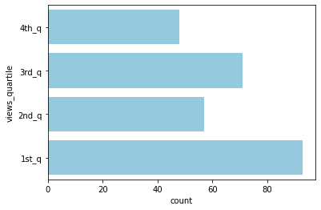
2) views 사분위별 ratings_disabled 기능을 사용한 영상의 수
sns.countplot(data=unique_recentf_df[unique_recentf_df['ratings_disabled']], y='views_quartile',
order=['4th_q', '3rd_q', '2nd_q', '1st_q'], color='skyblue');
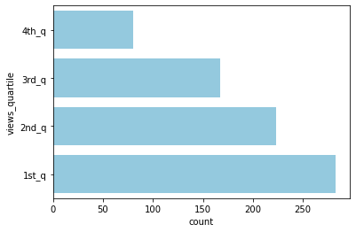
- views 기준 4사분위 중 1사분위(하위 25%)에 ratings_disabled 기능을 사용한 영상의 수가 유독 많이 분포 (4사분위의 약 4배)
→ 결론: 평균의 차이와, 4사분위 내 분포를 고려해보면, ratings_disabled 기능을 사용하지 않는 것이 보다 높은 views를 기록하는 데에 유리할 수 있다고 생각됨